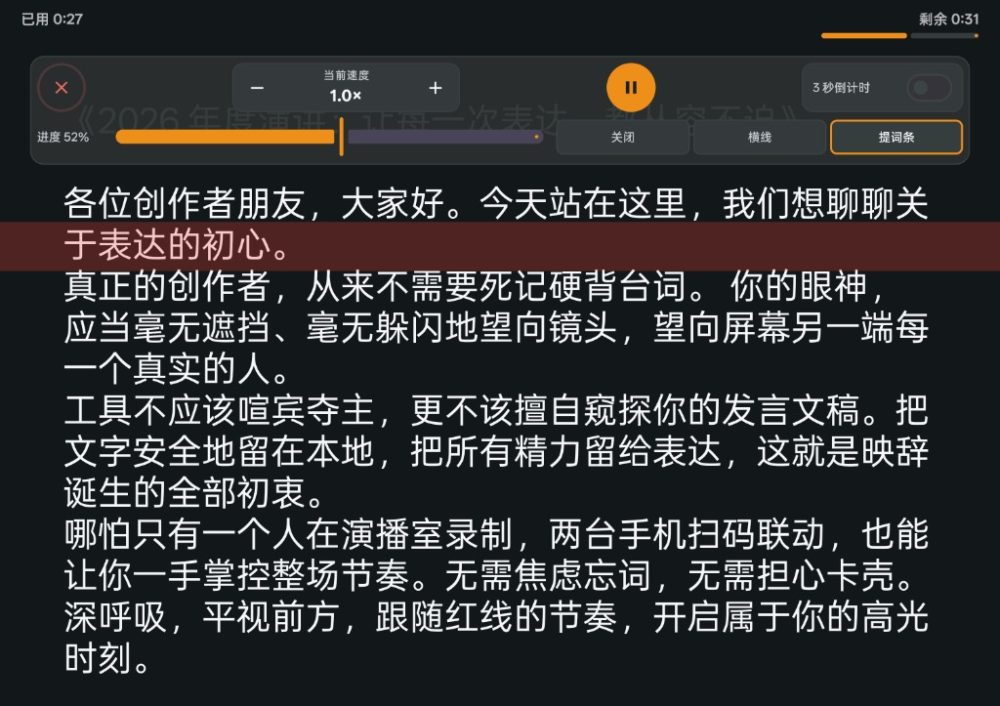
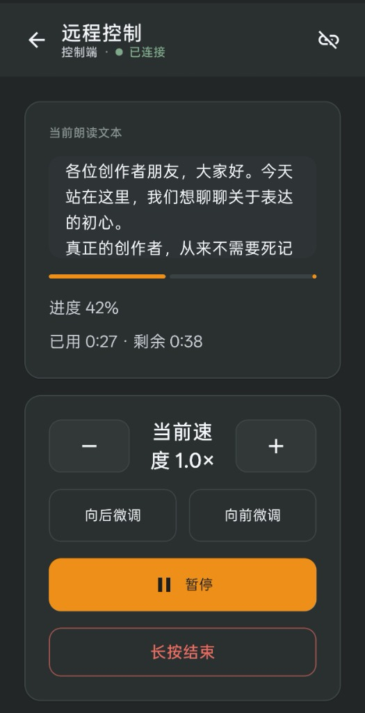

仅支持 Android
·
纯本地运行
·
Android 8.0+
台词在眼前，
从容看镜头。
不用注册账号，文稿不传云端，没有开屏广告。平时常用的 Word 与 Markdown 格式直接导入，提供专业分光镜镜像翻转，还能用两台手机扫码无线遥控。
演播端已就绪 · 纯本地运行


WORKFLOW & CAPABILITIES
为视频录制与公开演讲打造的实用体验
01 / DUAL DEVICE REMOTE
两台手机无线遥控，不用单独买遥控器
一台大屏手机或平板放在镜头前当提词板，另一台手机拿在手里当遥控器。打开软件扫个码就能连上。手里的遥控手机不仅能暂停、加速、快进快退，还能实时同步看到当前读到了哪一句，长文阅读平滑顺畅，一个人拍视频也能掌控全场。
- ✓ 连同一 Wi-Fi 或直接开手机热点即可使用，零消耗流量
- ✓ 手持机实时同步文字游标，不用扭头看大屏即可掌控进度
局域网 WebSocket 直连 (延迟 < 15ms)
PORT 8080
当前朗读同步视窗
进度 42%
各位创作者朋友，大家好。今天站在这里，我们想聊聊关于表达的初心...
- 减速
1.0x
+ 加速
向后微调
·
向前微调
02 / DOCUMENT INGESTION
常用的 Word、Markdown 和文本直接导入
平时写好的台词稿，不用麻烦地一段段复制粘贴。点一下直接导入微信或电脑发来的 Word (.docx/.doc)、Markdown (.md) 和 TXT 纯文本，自动提取正文，自动处理繁简编码，中文绝不乱码。
- ✓ 支持 GB18030、UTF-8、UTF-16 智能编码检测
- ✓ 纯本地安全清洗正文，绝不上传到任何云端服务器
.docx / .doc
Word 文档自动提取正文
.md
Markdown 纯文直接导入
.txt
GB18030 中文大字符防乱码
SAF 框架
零外部存储多余权限申请
03 / PROMPTER CRAFT
台词重点随手标，专业提词箱镜像翻转
录视频最怕语气平淡像背书。提词器支持选中台词一键加粗、加下划线，提醒自己哪里该停顿、哪里该加重。配合专业提词架使用时，一键水平镜像翻转，透过分光镜看就是完全正常的文字。
- ✓ 打字实时自动保存，手滑误退出不丢稿
- ✓ 专业分光镜水平镜像，匀速推进不忽快忽慢
屏幕显示状态 (水平镜像)
从容面对镜头表达
分光镜中看到的正像
从容面对镜头表达
PRIVACY FIRST
稿件只在手机里
台本只保存在你自己设备上，不传云端，发言文稿零泄露风险。
NO ADVERTISING
没有开屏广告
没有倒计时开屏广告与弹窗推荐，打开软件就能直接沉浸录制。
ZERO FRICTION
无需注册登录
不收手机验证码，不强制授权微信，安装后打开就能直接用。
ANDROID ONLY
仅支持安卓端
专为 Android 8.0+ 手机与平板原生适配，暂不支持 iOS (iPhone/iPad) 苹果端。
开发中
/
源码开放
获取映辞 · Elocue
专为 Android 系统开发，支持 Android 8.0 及以上版本的安卓手机与平板设备。完全开源，遵循 Apache-2.0 协议。
支持平台提示：本项目目前仅针对 Android (安卓) 原生系统开发，支持 Android 手机与平板设备；暂不提供 iOS (iPhone/iPad) 苹果版本或电脑端。
开发者可前往 技术与开源详情 页面查看代码架构或通过源码直接编译。